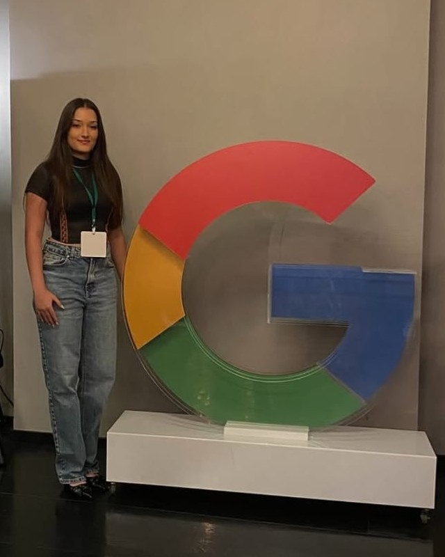

APIs e integrações
APIs REST seguras e integração entre sistemas e serviços externos, com tratamento de erros, cache e variáveis de ambiente.
Desenvolvedora Back-end & Full Stack
Sou Pâmela. Construo APIs, integrações e aplicações web com Java, PHP/WordPress, Node.js e Python — do banco de dados até a tela.
Atuação
APIs REST seguras e integração entre sistemas e serviços externos, com tratamento de erros, cache e variáveis de ambiente.
Portais editoriais em WordPress com blocos Gutenberg e aplicações com back-end próprio e interface em React.
Modelagem em MySQL e PostgreSQL, pipelines com Docker e scripts que automatizam tarefas repetitivas.
Projetos
Passe o mouse para rolar a página do projeto. Clique no título (ou deslize para cima no celular) para ver a descrição e as tecnologias.
Stack
A linguagem é meio, não fim: escolho a que resolve melhor o problema.
Sobre

Trabalho com back-end e gosto de ver o sistema inteiro funcionando: regra de negócio, banco de dados, integração entre serviços e a interface que a pessoa usa.
Hoje desenvolvo projetos no Grupo Jovem Pan, com PHP e WordPress (Gutenberg) para portais editoriais e Node.js para aplicações de dados, como cotações, Copa e eleições. Minha base é Java com Spring Boot, e também tenho projetos em Python e JavaScript.
Busco uma posição remota em que eu possa continuar aprendendo, escrever código limpo e entregar soluções confiáveis.
Contato
Conte rapidamente sobre a vaga ou o projeto. Respondo por e-mail ou LinkedIn, o que for melhor para você.